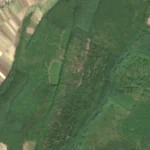
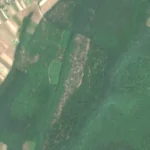

7,0 ha de pădure schimbată lângă Gepiș
Între vara lui 2025 și 17 aprilie 2026, pe aproximativ 7,0 ha de pădure din comuna Lăzăreni, lângă Gepiș, județul Bihor, imaginile Sentinel-2 arată că vegetația a dispărut sau s-a schimbat puternic. În registrul public există o autorizație de tăiere pentru acest loc.
Autorizația de tăiere
cu autorizație
Parcela autorizată acoperă zona, iar autorizația era valabilă când s-a tăiat.
Ce se vede în poze: În poza detaliată din 2021 zona marcată era acoperită de pădure deasă, iar în poza «după» apare o fâșie deschisă, deschisă la culoare, cu sol dezgolit și resturi de lemn, în timp ce pădurea din jur a rămas verde. Asta arată că arborii au fost tăiați, iar o autorizație de exploatare valabilă există pentru zonă.


Înainte și după: Copernicus Sentinel-2, 10 m pe pixel, conturul zonei cu portocaliu. Poza detaliată (Esri World Imagery) e de acum 1–4 ani: arată ce era acolo înainte, nu tăierea.
Pe scurt
- Identificator
- 20260417_46845_22039
- Locul
- Gepiș, comuna Lăzăreni, județul Bihor (SIRUTA 29813)
- Coordonate (centru)
- 46.84461, 22.03894 · Google Maps · OpenStreetMap
- Suprafața
- 7,0 ha (din pixeli de 10 m; ± câțiva pixeli pe margine)
- Pădurea întreagă
- în vara lui 2025 (de atunci, nori sau iarnă)
- Prima imagine cu schimbarea
- 17 aprilie 2026
- S-a lărgit
- 25 aprilie 2026
- Imagini în care se vede schimbarea
- 7
- Cât de sigur e semnalul din satelit
- ridicată
- Autorizația cea mai apropiată
- APV 2500159300090 · Ocolul Silvic Tinca, valabilă 28 mai 2025 – 10 septembrie 2025, la 0 m de zonă
- Terenul
- în afara amenajamentelor silvice publicate (pășune, mal de apă sau pădure privată fără amenajament în registru)
- Pădure pierdută în jur, alți ani
- 2017, 2020, 2022 (Hansen)
- Garda Forestieră
- Oradea
Dacă vrei să verifici sau să sesizezi
- Pădurile din județul Bihor sunt în grija Gărzii Forestiere Oradea, care controlează tăierile și dă amenzile.
- Autorizația găsită în zonă e emisă de Ocolul Silvic Tinca.
- Formularul Gărzii Forestiere Naționale primește sesizări și fără nume. Trimite linkul acestei pagini, coordonatele și pozele. Dacă tăierea e în desfășurare, sună la 112.
- Autorizațiile și transporturile de lemn se pot căuta în Inspectorul Pădurii.
Pagina arată ce se vede din satelit și ce scrie în registrul public; nu e o dovadă în sine.
Cum citezi zona
Linkul acestei pagini nu se schimbă. Dacă zona iese vreodată de pe hartă, pagina rămâne, cu data și cu ce știam despre ea.
Pădurea RO, zona 20260417_46845_22039: 7,0 ha, Gepiș, comuna Lăzăreni, județul Bihor; schimbare văzută din satelit între vara lui 2025 și 17 aprilie 2026. https://iliemihai.github.io/padurea-ro/zona/20260417_46845_22039/ (consultat la [data]). Date: CC BY 4.0.
Datele zonei: GeoJSON · toate zonele: date deschise · licența CC BY 4.0.
Istoricul zonei pe hartă
Starea se poate schimba când registrul publică o autorizație sau când analistul vede poze mai bune. O ținem aici, ca un link citat să arate și ce spuneam atunci.
Pe hartă cel târziu din 5 noiembrie 2026.
- 5 noiembrie 2026 – azi · cu autorizație
Detalii tehnice, pentru verificare
De ce acest nivel de încredere:
- văzută schimbată în 7 imagini diferite
- peste 3 ha
- pădurea din jur e neschimbată
- ultima dată am văzut-o intactă în vara lui 2025 (de atunci, nori sau zăpadă)
- AI-ul vede pădure dispărută
Ce a văzut analistul cu context: Poza detaliată din 2021 arată coronament închis și uniform; în Sentinel-2 «după» (iunie 2026) fâșia are textură pestriță, albicioasă, cu margini relativ clare, iar pădurea din jur rămâne verde, deci nu este efect de sezon sau de lumină. Nu continuă ca drum în afara conturului și nu are forme geometrice, deci nu este șantier. Datele susțin tăierea: 100% copaci în WorldCover, coronament de 88% în 2000, 7 ha schimbate în 7 imagini și autorizația APV 2500159300090 (Ocolul Silvic Tinca) cu suprapunere de 19%, valabilă 2025-05-28 – 2025-09-10. Incertitudinea vine din rezoluția de 10 m, care nu permite să se distingă o tăiere rasă de o rărire puternică.
- Placa Sentinel-2
- 34TES
- NDVI de referință
- 0.88
- NBR de referință
- 0.64
- Scăderea în pădurea din jur
- 0.01
- Persistență
- 0.89
- NDVI / NBR după
- 0.415 / 0.076
- Analistul de zi (model)
- taiere · 0.8 · claude-haiku-5-5
- Analistul cu context (model)
- taiere_rasa · 0.62
Cum se calculează fiecare: metodologia.
Pune harta zonei într-un articol
Copiază codul în articol (merge în majoritatea site-urilor de știri). Sau pune doar linkul: WhatsApp, Facebook și X arată singure poza zonei.